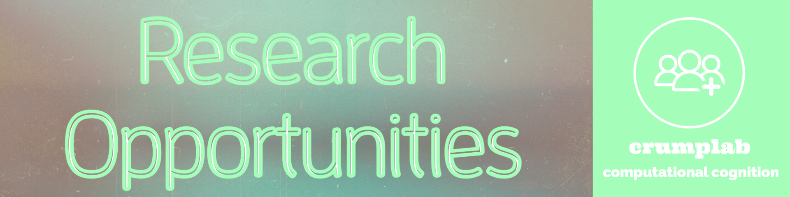

Join
Opportunities.Rmd
Ph.D. students
Students interested in pursuing a Ph.D. should apply to the Cognitive and Comparative Psychology (CCP) training area in the Psychology Doctoral Program at the Graduate Center of CUNY. The deadline for applications December 1st, 2020. You can apply directly here. Interested applicants should also email Matt Crump (mcrump@brooklyn.cuny.edu) to introduce themselves and their research interests.
Research experience for Brooklyn College students
We are always looking for students (undergraduate or master’s) who are interested in human cognition (how people think, learn, remember, attend, etc.), and who want to gain research experience by learning computational techniques for running experiments and analyzing data.
All students interested in joining the lab should first complete this entry assignment, which consists of writing a short computer program. The entry assignment takes a little bit of time and effort. Research takes a lot of time and effort, and completing the assignment will show us that you are motivated to spend time on research. More important, the assignment will help you decide if you will enjoy working on research problems in the lab. If you enjoy the process of completing the assignment, then we think you will look forward to working on research problems in the lab. You should also read some of the lab publications to see if you are interested in the research questions we are asking.
Course credit for Research and Honor’s Theses
Most students who join the lab enroll in research classes so that they receive course credit as they gain research experience in the lab. If you are interested in taking one of the courses, please complete the entry assignment above, and then email Dr. Crump about availability. The classes include:
- Psych 2001-4 Laboratory Experience (3 credits each)
- Psych 5001-4 Independent Research (3 credits each)
The Laboratory Experience courses are intended for students who are new to research, and the Independent Research courses are for more senior students. They are each one semester long, and involve conducting research in the lab and writing a research report as a final project.
Several students have completed honor’s theses in the lab (see here for departmental requirements). An honor’s thesis consists of two semesters of Independent Research (e.g., Psych 5001 and 5002) and culminates in writing a thesis covering the research conducted over the year. The honor’s thesis option is a great opportunity for students interested in pursuing research in a Ph.D. program following undergraduate studies. The honor’s thesis is a major commitment in time and effort for everyone involved, so students who complete honor’s theses in the lab are usually already members of the lab and have previous research experience in the lab (e.g., have taken Psyc 2001 with Dr. Crump). So, if you are interested in research you should plan to get involved as early as possible.
Undergraduate Research
Recent undergraduate research projects completed in the lab.
- 2022: Patrick Ihejirika, “Try and forget this image: The role of stimulus duration in directed forgetting for natural scenes”, Undergraduate MARC Honors thesis, Barry Goldwater Scholar
- 2019: Mark Rayev, “Deception detection through word usage and word production time in typing”, Undergraduate Macaulay Honors
- 2018: Walter Lai, Contributing author on “Instance theory predicts information theory: Episodic uncertainty as a determinant of keystroke dynamics”, currently completing a Masters in Data Science at Southern Methodist University
Entry Assignment
If you’re interested in becoming part of the lab (volunteering, taking a course etc.), the first thing to do is to complete this entry assignment. The assignment consists of writing a small computer program (no previous programming experience necessary, this is an invitation to start learning programming skills).
Why are we asking you to do this?
A lot of the activities in the lab involve computer programming: during experiments, the timing, stimulus presentation and key press registration are all controlled by programs we write ourselves. When we analyze the data from the experiments, we again do this in programs, written by us, which take the raw data, calculate things such as averages, display results in graphs, and perform statistical tests.
This assignment allows you to demonstrate your interest in this type of activity, and by investing some time in this assignment you can show your commitment to becoming part of the lab.
Instructions
Here is your assignment. By following these steps you will make a website, and then attempt to solve a problem in R. It sounds complicated, but everything you need to get started is right here, by following these steps:
Make yourself a github account.
General info about making websites with R Markdown is here, but see next point for downloading an example you can use straight away. https://rmarkdown.rstudio.com/rmarkdown_websites.htm
-
Follow these steps to get started:
- the repository is here https://github.com/CrumpLab/LabJournalWebsite
- Follow the instructions in the read me file for how to compile the website in R-studio, and then host it on github
- You can see what the website will look like once you get it up and runnning here https://crumplab.github.io/LabJournalWebsite/index.html
- Follow the instructions inside the source for the website, and by reading the website to get started learning R. For example, in the example website, you can read the journal page, that explains the process. You will see there are some example problems to solve in R, and a link to more problems to solve. I solved the first three, you assignment is to attempt to solve one more problem.
Assuming you got everything up and running, then you can send me an email (mcrump@brooklyn.cuny.edu) introducing yourself. Link to your website that you made, and tell me a little bit about why you want to join the lab and we’ll set up a meeting.
Email your R-script to Dr. Crump (mcrump@brooklyn.cuny.edu) and request a time to meet about gaining research experience in the lab.